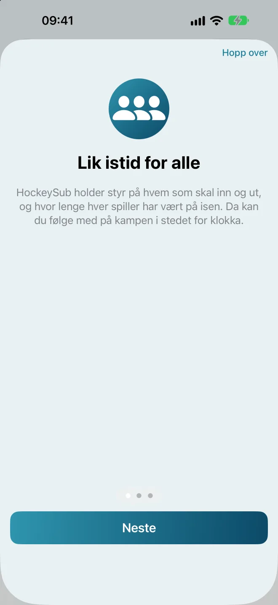
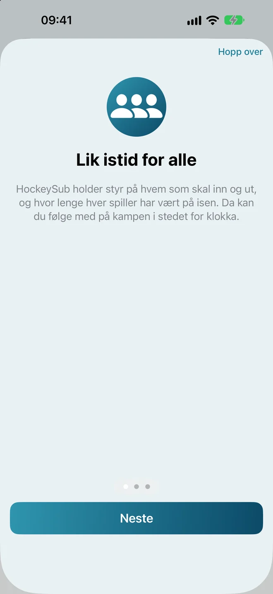
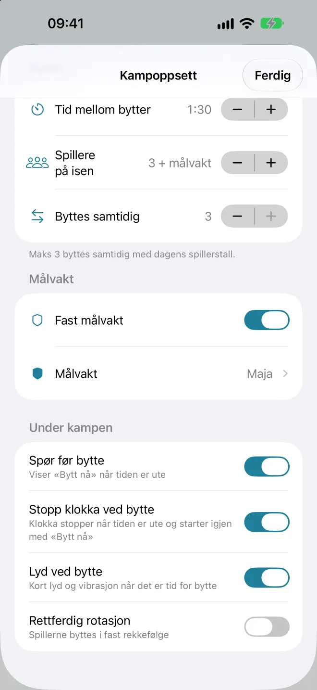
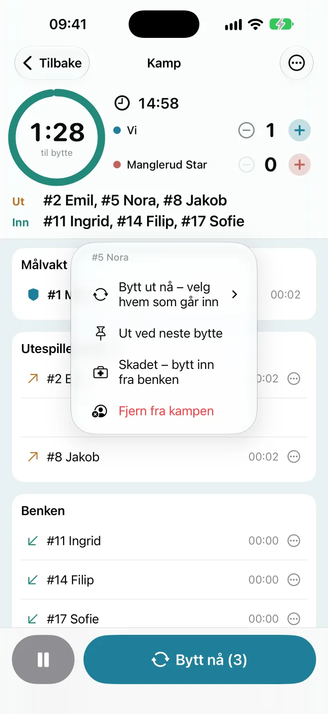
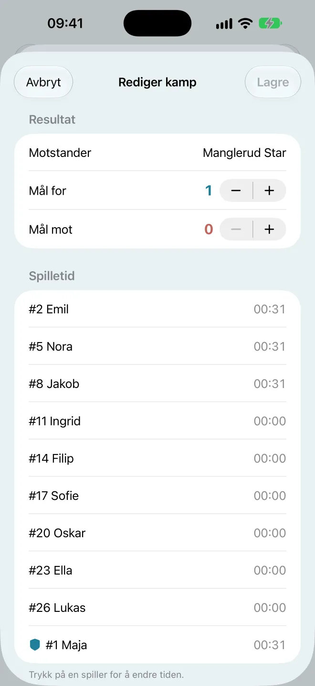
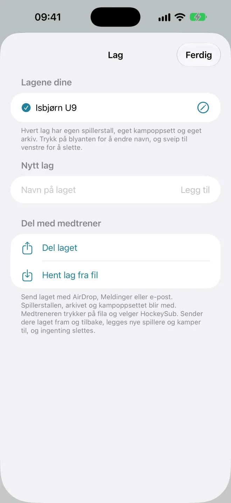

1. Kom i gang
Første gang du åpner HockeySub, får du en kort innføring på tre sider. Der kan du også trykke Prøv en demo-kamp for å se hvordan en kamp fungerer, med et ferdig demolag. Demo-kampen lagres ikke, og den rører ikke laget ditt.
Oppsett-skjermen
Etter innføringen kommer du til Oppsett. Det er her du gjør alt før kampen:
- Neste kamp (det blå kortet øverst) viser motstander, hvor mange som er til stede, kamplengde og tid per bytte. Trykk på kortet for å åpne Kampoppsett.
- Kampoppsett er reglene for kampen: klasse, kamplengde, bytter og målvakt.
- Startende utespillere er hvem som går på isen først.
- Spillerstall er laget ditt, og hvem som er med i dag.
- Start kamp ligger alltid nederst. Mangler noe, står det over knappen hva du må gjøre.
Knappene øverst
- Arkivboksen til venstre åpner Arkiv med alle lagrede kamper.
- Spørsmålstegnet har innføringen («Slik fungerer appen»), demo-kampen, en lenke til denne manualen («Brukermanual»), «Send tilbakemelding» og «HockeySub Pro». «Send tilbakemelding» åpner en e-post til utvikleren med appversjonen ferdig utfylt.
- Lag-knappen (to personer) bytter mellom lagene dine og åpner «Administrer lag».
Klar på et minutt: legg inn spillerne, velg klasse under Kampoppsett, huk av hvem som er til stede og trykk Start kamp. Resten kan du finjustere etter hvert.
Språk: Appen finnes på norsk, svensk og engelsk, og følger språket på iPhonen. Vil du ha et annet språk bare i HockeySub, går du til Innstillinger > Apper > HockeySub > Språk.


2. Spillerstallen
Legge inn spillere
- Skriv navnet i feltet Ny spiller.
- Trykk Legg til (eller Ferdig på tastaturet).
- Gjenta for hele laget. Målvakten legges inn som en vanlig spiller.
Draktnummer, navn og sletting
Trykk på … bak en spiller for å velge Legg til draktnummer, Endre navn eller Slett. Draktnummeret vises foran navnet under kampen og i Arkiv, for eksempel «#8 Jakob». La feltet stå tomt for å fjerne nummeret.
Hvem er med i dag?
Trykk på ringen foran navnet for å huke av hvem som er til stede. Bare spillere med hake blir med i kampen. Under … øverst i Spillerstall finner du Alle til stede, som huker av alle på en gang.
Rekkefølgen
Spillerne går på isen i den rekkefølgen de står i stallen. Velg Endre rekkefølge under … øverst i Spillerstall, og dra spillerne opp eller ned. Trykk Ferdig når du er fornøyd.
Hvem starter?
Trykk Startende utespillere på Oppsett og huk av de som skal starte på isen. Målvakten kommer i tillegg. Velger du færre enn det er plass til, fylles resten på i stallens rekkefølge. Tøm fjerner valgene.

3. Kampoppsett
Trykk Kampoppsett på Oppsett (eller det blå kortet). Alt lagres med en gang, så du kan bare trykke Ferdig når du er klar.
Klasse og NIHF-regler
Velg klasse øverst, så fylles reglene fra Norges Ishockeyforbund (NIHF) inn for deg. Du kan endre verdiene etterpå. Da står klassen som «Egendefinert».
| Klasse | På isen | Kamp | Tid mellom bytter |
|---|---|---|---|
| U7–U9 | 3 + målvakt | 15 min netto | 1:30 |
| U10–U11 | 3 + målvakt | 15 min løpende | 1:00 |
| U12 | 3 + målvakt | 15 min løpende | Velger du selv |
| U13 | 5 + målvakt | 40 min | Velger du selv |
Under Kampregler finner du en lettlest oppsummering av reglementet for alle klassene, og lenker til de offisielle dokumentene fra NIHF. Oppsummeringen ligger i appen, så du kan lese den i ishallen uten nett.
U7–U9: Slå på «Stopp klokka ved bytte», så følger appen netto spilletid. U13: Appen har ikke perioder ennå, så kampen settes til 40 minutter.
Kamp
- Motstander: navnet vises i kampen, i Arkiv og i PDF-rapporten.
- Kamplengde: fra 5 til 120 minutter.
Bytter
- Tid mellom bytter: hvor lenge hvert bytte varer, fra 20 sekunder til 3 minutter.
- Spillere på isen: hvor mange som spiller samtidig, inkludert målvakten.
- Byttes samtidig: hvor mange som går ut og inn ved hvert bytte. Vanligvis hele rekka. Bytter du færre enn hele rekka, viser appen en advarsel, fordi NIHF sier at ingen skal spille to bytter på rad.
Målvakt
Med Fast målvakt på velger du hvem som står i mål. Målvakten står hele kampen og er ikke med i rotasjonen. Slår du det av, roterer alle.
Under kampen
- Spør før bytte: appen viser «Tid for bytte!» og venter på at du trykker «Bytt nå». Slått av bytter appen av seg selv når tiden er ute.
- Stopp klokka ved bytte: kampklokka stopper når tiden er ute, og starter igjen når du trykker «Bytt nå».
- Lyd ved bytte: en kort lyd i tillegg til vibrasjonen.
- Rettferdig rotasjon: de med minst spilletid går inn, og de med mest spilletid går ut. Slått av byttes spillerne i fast rekkefølge.


4. Under kampen
Trykk Start kamp. Skjermen holder seg våken så lenge klokka går.
Toppen av skjermen
- Ringen teller ned til neste bytte. Den blir ravfarget de siste ti sekundene.
- Kampklokka viser tiden som er igjen. Går kampen over tiden, vises overtiden med pluss foran.
- Stillingen: trykk + ved «Vi» eller motstanderen når det blir mål. − retter et feiltrykk.
- Ut og Inn viser hvem som byttes neste gang.
Listene
Under toppen ser du Målvakt, Utespillere på is, Benken og eventuelt Ute av kampen. Tallet bak hver spiller er hvor lenge spilleren har vært på isen totalt. Små piler viser hvem som skal ut og inn ved neste bytte.
Tid for bytte
Når tiden er ute, vibrerer telefonen og «Tid for bytte!» kommer opp med hvem som skal ut og inn. Trykk Bytt nå. Trenger du å vente litt, trykker du Ikke nå. Da står det «Bytt!» i ringen, og du ser hvor lenge byttet har ventet. Trykk på ringen for å få opp varselet igjen.
Knappen Bytt nå nederst kan du trykke når som helst, også før tiden er ute. Tallet i knappen er hvor mange som byttes. Pauseknappen ved siden av stopper og starter klokka.
Velge hvem som går inn og ut
Trykk på en spiller for å få opp valgene:
- På isen: Bytt ut nå – velg hvem som går inn, Ut ved neste bytte, Skadet – bytt inn fra benken og Fjern fra kampen.
- På benken: Bytt inn nå – velg hvem som går ut, Inn ved neste bytte og Fjern fra kampen.
Spillere du har valgt til neste bytte, får en liten nål. Trykk på spilleren igjen og velg «Ikke ut/inn ved neste bytte» for å angre.
Skade eller spiller som må gå
Skadet – bytt inn fra benken tar spilleren av isen og setter inn neste fra benken med en gang. Fjern fra kampen flytter spilleren til «Ute av kampen». Blir spilleren klar igjen, trykker du Ta inn.
Avslutte kampen
Trykk … øverst til høyre og velg Stopp og lagre kampen. Kampen havner i Arkiv. Var det en øvingskamp du ikke vil ta vare på, velger du Stopp og forkast kampen.
Tilbake øverst til venstre tar deg til Oppsett uten å stoppe kampen. Trykk Fortsett kamp for å komme tilbake. Lukkes appen midt i kampen, fortsetter den der den slapp når du åpner den igjen.



5. Låseskjerm, Dynamic Island og Apple Watch
Mens kampen pågår, viser HockeySub en Live Activity på låseskjermen. Der ser du nedtellingen til neste bytte, hvem som skal inn, hvem som kommer etter og stillingen. Du kan trykke Bytt nå rett fra låseskjermen, uten å åpne appen.
På iPhone med Dynamic Island ser du nedtellingen øverst på skjermen også når du bruker andre apper. Hold fingeren på den for å se mer og få «Bytt nå»-knappen.
Har du Apple Watch, dukker den samme informasjonen opp i Smart Stack på klokka, med egen «Bytt nå»-knapp.
Ser du den ikke? Gå til Innstillinger > HockeySub på iPhonen og sjekk at Live Activities er slått på.

6. Arkiv og sesongstatistikk
Trykk på arkivboksen øverst til venstre på Oppsett. Øverst ser du seire, uavgjort, tap og målforskjell for alle kampene. Under ligger kampene, sortert etter måned.
Kampdetaljer
Trykk på en kamp for å se resultatet, oppsettet og hvor lenge hver spiller var på isen.
Rette en kamp
Trykk Rediger i kampdetaljene. Der kan du endre motstander, mål for og mål mot, og spilletiden til hver spiller (trykk på spilleren). Trykk Lagre.
Dele en kamp som PDF
Trykk på dele-knappen øverst til høyre i kampdetaljene (Del som PDF). Send rapporten med Meldinger, e-post, AirDrop eller lagre den i Filer.
Dele flere kamper
- Trykk … øverst til høyre i Arkiv og velg Velg kamper å dele.
- Trykk på kampene du vil ha med, eller Velg alle.
- Trykk Del … kamper nederst. Du får én PDF med én side per kamp.
Pro: Å dele flere kamper samtidig krever HockeySub Pro. Én og én kamp kan du alltid dele gratis.
Slette kamper
Sveip en kamp mot venstre og trykk Slett. Under … kan du også velge Slett kamper for å slette flere, eller Slett alle. Sletting kan ikke angres.
Sesongstatistikk
Trykk Sesongstatistikk øverst i Arkiv. Her ser du spilletiden til hver spiller over alle kampene. Stolpen viser snittet per kamp, så det blir rettferdig selv om noen har vært med på færre kamper. Kamper som målvakt er ikke med i snittet.
Under Periode velger du Alle, Denne sesongen (fra 1. august) eller Velg for egne datoer. Statistikken kan også deles som PDF med dele-knappen øverst.
Pro: Sesongstatistikk, også som PDF, er en del av HockeySub Pro. Arkivet, kampdetaljene og å rette kamper er gratis.




7. Flere lag og deling med medtrener
Flere lag
Trykk på lag-knappen øverst til høyre på Oppsett og velg Administrer lag. Under Nytt lag skriver du navnet og trykker Legg til. Hvert lag har sin egen spillerstall, sitt eget kampoppsett og sitt eget arkiv.
Når du har flere lag, bytter du lag med lag-knappen. Navnet på laget står øverst på Oppsett. Du kan ikke bytte lag mens en kamp pågår.
Trykk på blyanten for å endre navn på et lag, eller sveip mot venstre for å slette det. Appen sier hvor mange spillere og kamper som forsvinner før du sletter.
Pro: Det første laget er gratis. For å lage lag nummer to og flere trenger du HockeySub Pro. Lag du får fra en medtrener eller henter fra fil, krever ikke Pro.
Dele laget med en medtrener
- Åpne Administrer lag og gå til Del med medtrener.
- Trykk Del laget, velg Send som fil og send fila med AirDrop, Meldinger eller e-post.
- Medtreneren trykker på fila og velger HockeySub, og så Hent laget.
Spillerstallen, arkivet og kampoppsettet blir med. Har medtreneren laget fra før, står det Oppdater laget i stedet. Da legges nye spillere og kamper til, og ingenting slettes. Har du fått fila et annet sted, kan du bruke Hent lag fra fil.
Vil du heller at laget holdes likt hos dere av seg selv, velger du Inviter via iCloud i stedet for «Send som fil», og sender lenken til medtreneren. Etter det synkes spillerstallen og arkivet mellom dere.
Pro: «Inviter via iCloud» krever HockeySub Pro, men bare for deg som inviterer. Medtreneren blir med gratis. «Send som fil» er alltid gratis.

8. HockeySub Pro
HockeySub er gratis å laste ned, og alt du trenger under kampen er gratis. HockeySub Pro er et engangskjøp på 79 kr. Det er ikke et abonnement.
Dette låser Pro opp
- Flere lag: lag nummer to og flere. Lag du får fra en medtrener eller henter fra fil, krever ikke Pro.
- Sesongstatistikk, også som PDF.
- Dele flere kamper samtidig som én PDF.
- iCloud-synk med medtrener: bare den som inviterer trenger Pro. Medtreneren blir med gratis.
Dette er gratis
Bytter og «Bytt nå», låseskjermen og Dynamic Island, rettferdig rotasjon og å velge hvem som går inn. NIHF-oppsett og kampregler. Ett lag, arkivet og å rette kamper. Å dele én kamp som PDF og å sende laget som fil. Innføringen og demo-kampen.
Slik kjøper du
I appen har Pro-funksjonene et lite «PRO»-merke eller en lås. Trykk på en av dem, så åpnes Pro-skjermen. Du finner den også under spørsmålstegnet på Oppsett, som HockeySub Pro. Trykk Kjøp Pro for 79 kr og bekreft med Apple-ID-en din.
Ny telefon eller slettet appen?
Åpne Pro-skjermen og trykk Gjenopprett kjøp. Bruk samme Apple-ID som da du kjøpte. Du betaler ikke på nytt.
Familiedeling
Pro støtter Familiedeling. Har du slått på kjøpsdeling, kan de andre i familien bruke Pro uten å kjøpe selv.
Kjøpet håndteres av Apple i App Store. Vi får ingen betalingsopplysninger.
9. Vanlige spørsmål
Hvordan sikrer appen at alle får lik istid?
Appen teller spilletiden til hver spiller og viser hvem som skal ut og inn. Slå på «Rettferdig rotasjon» under Kampoppsett, så går alltid de med minst spilletid inn og de med mest spilletid ut. Etter kampen ser du fordelingen i Arkiv og Sesongstatistikk.
En spiller kom for sent. Hva gjør jeg?
Spillere kan ikke legges til etter at kampen har startet. Venter du på noen, huker du dem av som til stede før du starter. Trykk så på spilleren under kampen og velg «Fjern fra kampen». Når spilleren kommer, trykker du «Ta inn» under «Ute av kampen».
Jeg får ikke lyd eller vibrasjon når det er tid for bytte.
Sjekk at «Lyd ved bytte» er på under Kampoppsett, at telefonen ikke står på lydløs, og at varsler er tillatt for HockeySub under Innstillinger > Varslinger.
Hvorfor kan jeg ikke trykke «Start kamp»?
Teksten over knappen sier hva som mangler. Vanligvis er det for få spillere til stede, eller at du har slått på «Fast målvakt» uten å velge hvem som står i mål.
Hva skjer hvis jeg starter en ny kamp mens en kamp pågår?
Appen spør om du vil lagre eller forkaste den pågående kampen før den nye starter.
Blir dataene mine sendt noe sted?
Nei. Alt lagres bare på telefonen din, og deles bare når du selv velger det. Les mer i personvernerklæringen.
Fant du ikke svaret? Se Support eller send en e-post til stillerflaten@icloud.com.